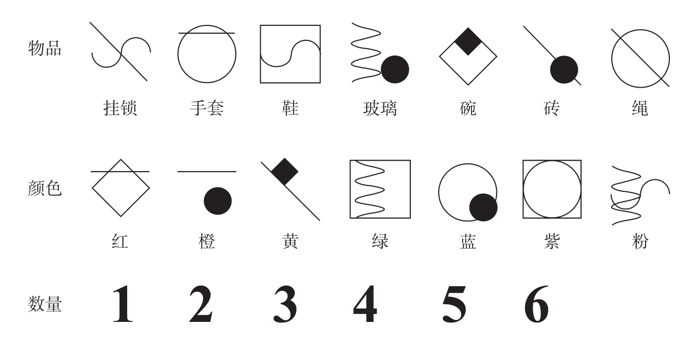

如果累加器模型是正确的，那么无论神经元具体如何执行，我们都能得到以下两个结论：第一，动物能够计数，因为每当一个外部事件发生时，它们的内部计数器就会增加1个单位。第二，它们的计数方式与人类的不同。动物的数量表征是模糊的。
人类在计数时，会运用一系列精确的数量词，不让错误有机可乘。每计入1个项目就会相应地在数量序列中增加1。对老鼠来说可不是这样，它们的数量像是一个虚拟的蓄水池中不断变动的水位。不同于人类“+1”的严苛逻辑，当老鼠向变化的总数中增加1个单位时，这项操作只能使用模糊的近似值，更像往鲁滨孙的蓄水池中加入一桶水。老鼠的情况让人联想到《爱丽丝镜中奇遇记》中爱丽丝遇到的算术窘境：
“你会做加法吗？”白皇后问道，“1加1加1加1加1加1加1加1加1加1是多少？”
“我不知道，”爱丽丝回答，“我数不清了。”
“她不会做加法。”红桃皇后打断了她的话。
尽管爱丽丝可能没有足够的时间来口头数数，但是她应当能够在一个大致范围内估计出总数。与此类似，老鼠需要通过非词语或非数学符号的方式来进行近似计数。人类的口头计数与动物有很大不同，我们很可能根本不应该讨论动物的“数字”概念，因为“数字”一词通常指离散的抽象符号。这就是为什么当科学家讨论动物的数量知觉时，会用“numerosity”（数量）或“numerousness”（数量）这样的词而不是“number”（数字）。累加器使动物能够估计事件的大致数量，但不能够计算确切的数字。动物的思维只能记住模糊的数量。
难道人类真的无法教动物学会一种数字符号吗？我们能不能教它们认识一系列与人类的数字符号和数词类似的离散数字标记，然后让它们理解这些标记其实代表着确切数目呢？事实上，这类实验略有成效。在20世纪80年代，日本研究者松泽哲郎（Tetsuro Matsuzawa）教会一只名为Ai的黑猩猩运用随机安排的一些符号来表示物体集合（见图1-7）18。每个用来代替单词的小图片占据电脑键盘上的一格。黑猩猩可以选择按任何一格来表示它看到的东西。经过长时间的训练，Ai学会了运用14种物品符号、11种颜色符号，以及对人类来说意义最为重大的前6个阿拉伯数字。比如，当屏幕上显示3支红色铅笔时，黑猩猩首先会按正方形中有黑色菱形的符号，这个符号表示“铅笔”，然后它会按下被水平线条贯穿的菱形（表示“红色”），最后它会按下手写体数字“3”。

日本的灵长类动物学家松泽哲郎教授他的黑猩猩Ai学习的词汇，图中展示了其中的一部分内容。Ai能够用这些词报告小集合物品的名称、颜色和数量。
图1-7 一套由视觉符号构成的词汇
资料来源：Matsuzawa, 1985;版权所有©1985 by Macmillan Magazines Ltd。
这一系列行为很可能只是机械动作反射的复杂形式。然而，松泽哲郎证明，这些图案在某种程度上确实能够起到和文字一样的效果：将它们组合就可以描述新的情境。例如，如果黑猩猩学会了一个新的符号“牙刷”，它就可以部分地将其运用到新的情景中，比如“5支绿色的牙刷”或者“2支黄色的牙刷”。当然，这种泛化能力的表现仍存在频繁的错误。
从1985年松泽哲郎首次发表研究成果至今，他的黑猩猩Ai在计算方面不断取得进步。它现在学会了前9个阿拉伯数字，并且对集合计数能够达到95%的正确率。关于反应时的记录表明，和人类一样，Ai会对大于3或4的数字进行串行计数。它也学会了将数字根据大小排序，不过，这项新能力的形成花费了多年时间。
从松泽哲郎的早期实验开始，至少有3个灵长类动物训练中心成功地在一些黑猩猩身上重复了数字符号的学习。相似的能力也存在于与人类亲缘关系很远的物种中。经过训练的海豚能够将任意物品与精确数量的鱼相匹配。在大约2 000次实验后，它们能够在两个对象中选择代表更多鱼的那个对象19。来自美国亚利桑那州大学的艾琳·佩珀贝格（Irene Pepperberg）教她的鹦鹉亚历克斯（Alex）学习大量英语单词，其中包括前几个数词20。亚历克斯在实验中表现出色，实验中不需要使用标示牌和塑胶代币，实验者可以使用标准英语来陈述问题，而亚历克斯可以即刻说出可识别的单词来回答问题！实验者将一系列物品，如绿色的钥匙、红色的钥匙、绿色的玩具和红色的玩具，展示在亚历克斯面前时，它能够回答“有几把红色的钥匙”这种复杂的问题。当然，此前对它的训练也持续了很长时间——几乎有20年。这些实验的结果证明了数量标记并不是哺乳动物所独有的。
更新的研究发现，黑猩猩能够使用数字符号进行部分运算。比如，萨拉·博伊森（Sarah Boysen）教她的黑猩猩舍巴（Sheba）学习简单的加法和比较运算21。舍巴必须先掌握0至9的阿拉伯数字与相应的数量之间的关联。此类实验需要极大的耐心。两年过后，舍巴逐渐能够接受越来越复杂的任务。在第一个阶段，它只需要在棋盘的6个格子中各放上1块饼干。在第二个阶段，实验者向它展示1至3块饼干，要求它在一些卡片中选择点数与棋盘上的饼干数相一致的一张。它由此学会了关注饼干和点的数目，并将点数与饼干数对应起来。在第三个阶段，带点的卡片逐渐被相对应的阿拉伯数字替代。舍巴进而学会了识别数字1、2和3，并且能够指出与饼干数对应的正确数字。最后，博伊森教舍巴学会了逆向操作：它必须从众多物品集合中选择一个数目与指定的阿拉伯数字相匹配的集合。
运用类似的策略，舍巴的知识逐渐扩展到从0到9的整个数字序列。在训练的最后阶段，舍巴已经可以灵活地将数字和对应的数量进行转换。这种能力被认为是符号认知的核心。符号代表着一种形状之外的隐藏含义，符号理解意指借助符号的形状来获取它的含义，而符号产出则需要根据想要表达的含义重现符号的形状。显然，在经历了漫长而刻苦的训练之后，黑猩猩舍巴掌握了这两种转换过程。
人类符号的一个重要特征是它们能够组合成句子，句子的意义源于组成它的词。比如，数字符号能被组合起来用于表示一个等式，如“2+2=4”。舍巴能不能结合多个数字进行符号运算呢？为了寻找答案，博伊森设计了一个符号加法任务。她将橙子藏在舍巴笼子中的不同地点，比如2个橙子藏在桌子下，3个橙子藏在盒子中。舍巴会在可能藏有橙子的地点搜寻，然后它会回到出发点，在几个阿拉伯数字中选择一个与找到的橙子总数相匹配的数字。从实验的第一轮次开始，舍巴就能成功完成任务。接下来是这个实验的符号版本。这一次，它在笼子中四处寻找时并没有发现橙子，而是找到了一些阿拉伯数字，比如桌子下有数字2，盒子中有数字4。同样，当搜寻结束后，它能够选出它所看到的数字的总和（2+4=6）。这个实验表明，黑猩猩能够识别每一个数字，并在心理层面将其与数量相关联，计算出所有数量相加的结果，最后提取出该结果所对应的视觉形式。没有哪种动物能够像黑猩猩一样拥有如此接近人类的符号计算能力。
即便是那些远不及黑猩猩聪明的物种，也能够学会运用数字符号进行初步的心算。比如，由美国佐治亚州立大学的戴维·沃什伯恩（David Washburn）和杜安·朗博（Duane Rumbaugh）训练的2只恒河猴，名为阿贝尔（Abel）和贝克（Baker），它们表现出一种能够对阿拉伯数字所代表的数量进行大小比较的非凡能力22。测试人员在计算机屏幕上给出一对阿拉伯数字，比如“2”“4”，阿贝尔和贝克使用操纵杆来选择一个数字。之后一个自动分配器会给出相应数量的水果糖，这种水果糖是灵长类动物非常喜欢的食品。如果选择了数字“4”，它们就能够品尝4颗水果糖，而如果选择了数字“2”，它们就只能得到2颗水果糖，这使它们有很强的驱动力选择较大的数字。事实上，这个任务与前文中的比较任务十分相似，唯一的不同在于动物不是直接面对食物，而是将阿拉伯数字作为表示食物多少的符号表征。动物需要从记忆中提取出数字符号的意义，即它所代表的数量。
我必须指出，阿贝尔和贝克与舍巴不同，在测试开始前它们没有接受过任何关于阿拉伯数字的训练。这就是为什么它们需要通过上百个实验轮次才能学会稳定地选择较大的数字。舍巴已经知道数字和数量的对应关系，所以在初次实验时就能在类似的数字比较任务中做出正确的回答。经过训练，阿贝尔和贝克也同样表现出色。当数字间距离足够大时，它们根本不会犯错，但是当数字只相差一个单位时，它们会有30%的错误率。我们在这个实验中发现了大家现在所熟知的距离效应，这种效应反映了在数字十分接近时容易产生混淆的倾向。
除了两个数字的任务，阿贝尔和贝克在面对3个数字、4个数字甚至5个9以内的数字时也能够成功做出选择，显然这两只恒河猴不可能通过死记硬背记住所有的正确答案。甚至当测试者向它们展示全新的随机数字集时，比如“5、8、2、1”，它们也能以远高于随机的正确率选出较大的数字。
在讨论这个主题时，有一个现象值得一提，舍巴在被要求选择两个数字中较小的那个时，遇到了困难，出现了奇怪的表现23。实验情境十分简单：舍巴和另一只黑猩猩共同面对两组食物，当舍巴指向其中一组食物时，实验者就会把这组食物给另一只黑猩猩，而舍巴则会拿到它并未选择的那组食物。在这个新情境中，指向数量较少的那组食物更符合舍巴的利益，因为这样做能让它得到更多食物。然而，舍巴没有一次能做出正确的选择。它仍继续指向数量较多的那组，就好像选择较多数量的食物是一种无法抑制的反应。随后，萨拉·博伊森用对应的阿拉伯数字替代食物实体。在第一轮实验中，舍巴立即选择了较小的数字！数字符号拯救了舍巴，让它可以不受实物的影响。数字符号使它摆脱了不可抑制地选择较多数量食物的冲动。